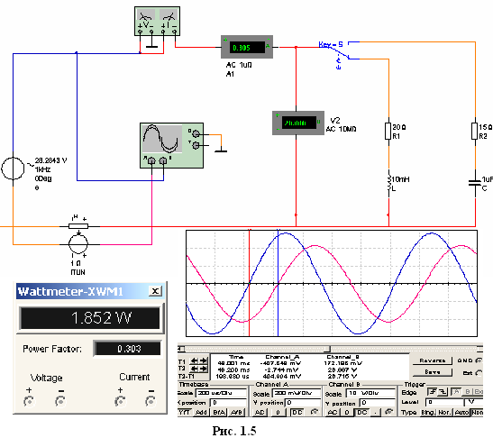

4. ИЗМЕРЕНИЕ УГЛА СДВИГА ФАЗ
Для
измерения угла сдвига фаз j
между синусоидальным напряжением и током в реальной цепи используют
измерители разности фаз (типа Ф2-34), метод вольтметра-амерметра-ваттметра, при
котором угол j определяют из
уравнения j = arccos(Р/UI),
где Р - показание ваттметра; а также методы, основанные на измерении
временного интервала t при помощи электронно-лучевого осциллографа.
Временной интервал t = j /w =
j /2pf
пропорционален фазовому сдвигу j
между синусоидальным напряжением и током в неразветвлённой цепи (рис. 1.3).

При моделировании схем цепей на рабочем поле программы EWB и их анализе для измерения углов сдвига фаз в цепях переменного тока наряду с осциллографом будет использоваться также ваттметр Wt (рис. 1.4, а). Показание вольтметра 1 В, подключаемого к выходу ваттметра, соответствует 1 Вт. В качестве датчика тока (рис. 1.4, а) использован зависимый источник тока ИТУН; выходное напряжение, пропорциональное току i, подается на канал A осциллографа (рис. 1.4, б), а напряжение u, снимаемое с зажимов источника е – на канал В. Установки чувствительности каналов А (Channel A) и В (Channel B) и развертки во времени (Time base) видны на рис. 1.4, б. Модель ваттметра установлена в библиотеке Custom.
При выполнении работы в среде MS8SD в отдельных схемах цепей установлен ваттметр (рис. 1.5), непосредственно измеряющий активную мощность цепи (ветви) в ваттах и коэффициент мощности cosφ (Power Factor). Изменена также панель осциллографа.
